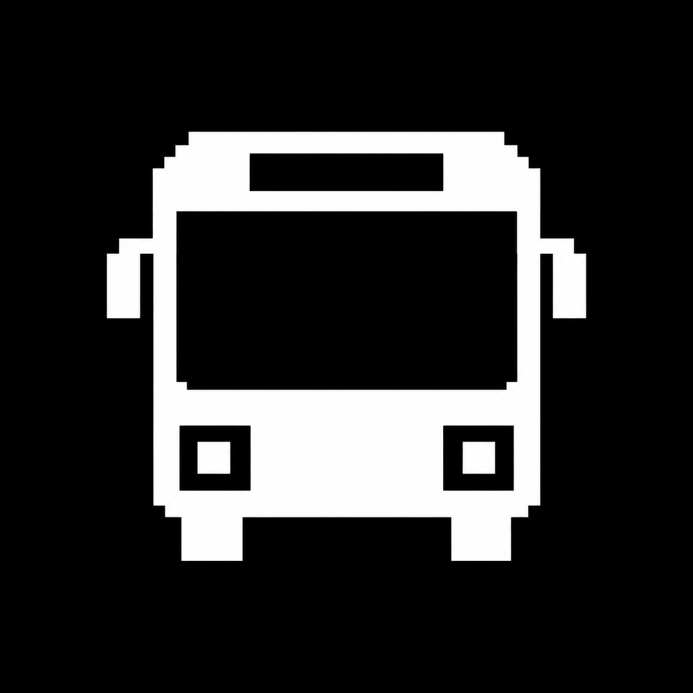
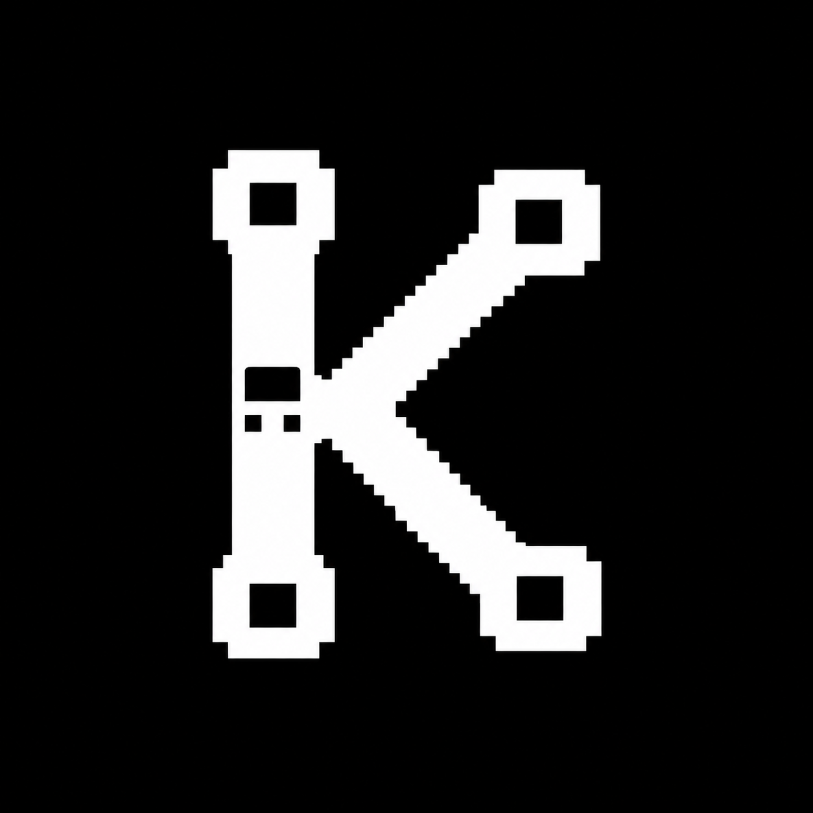
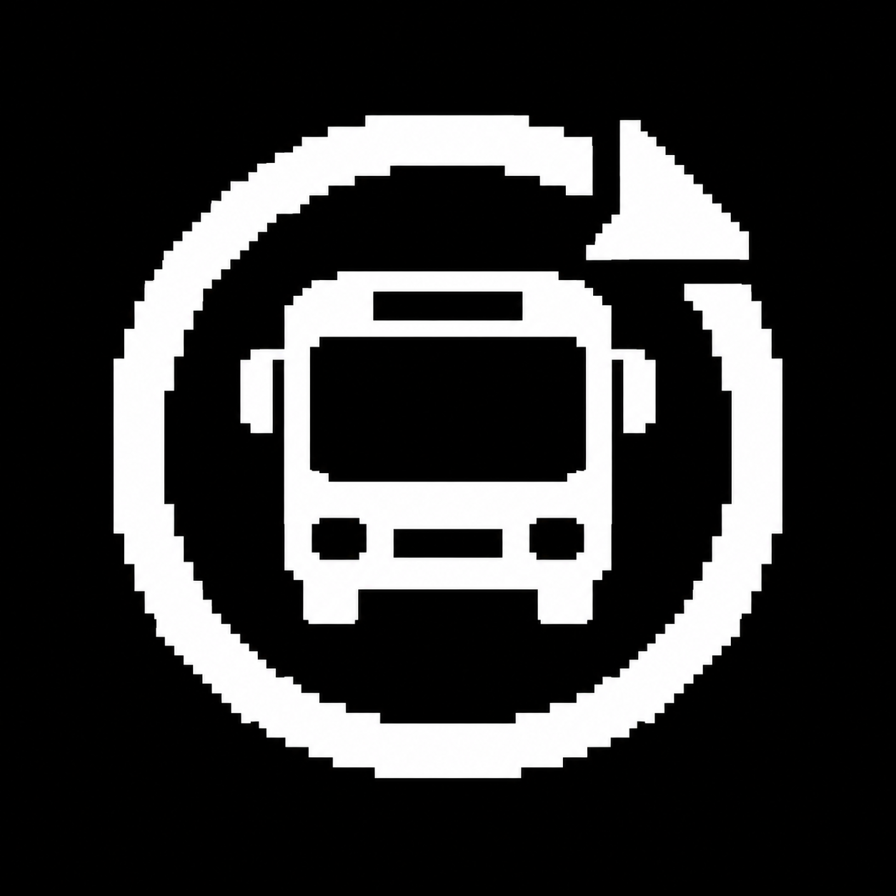
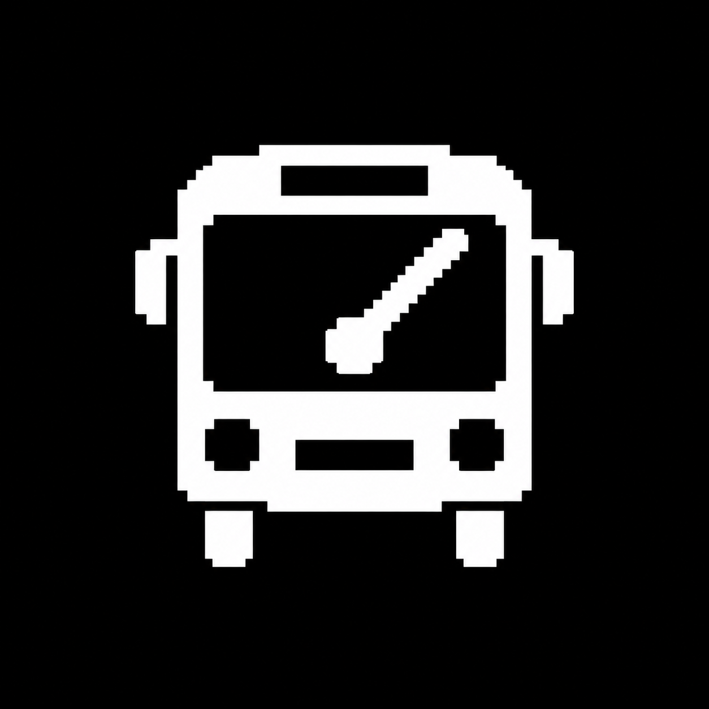
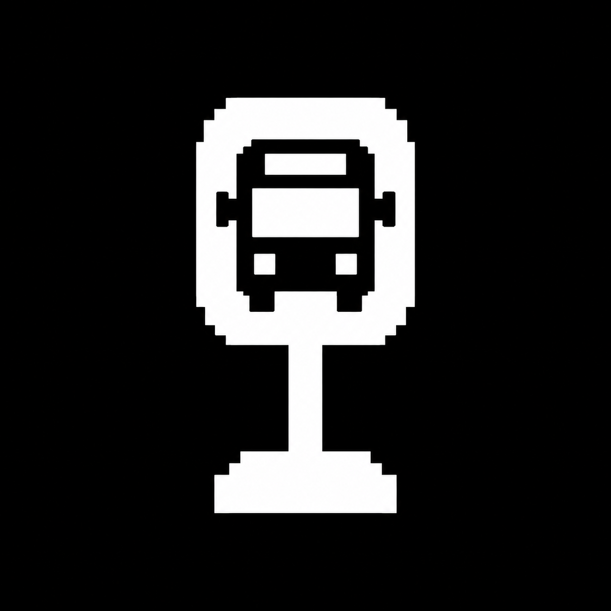
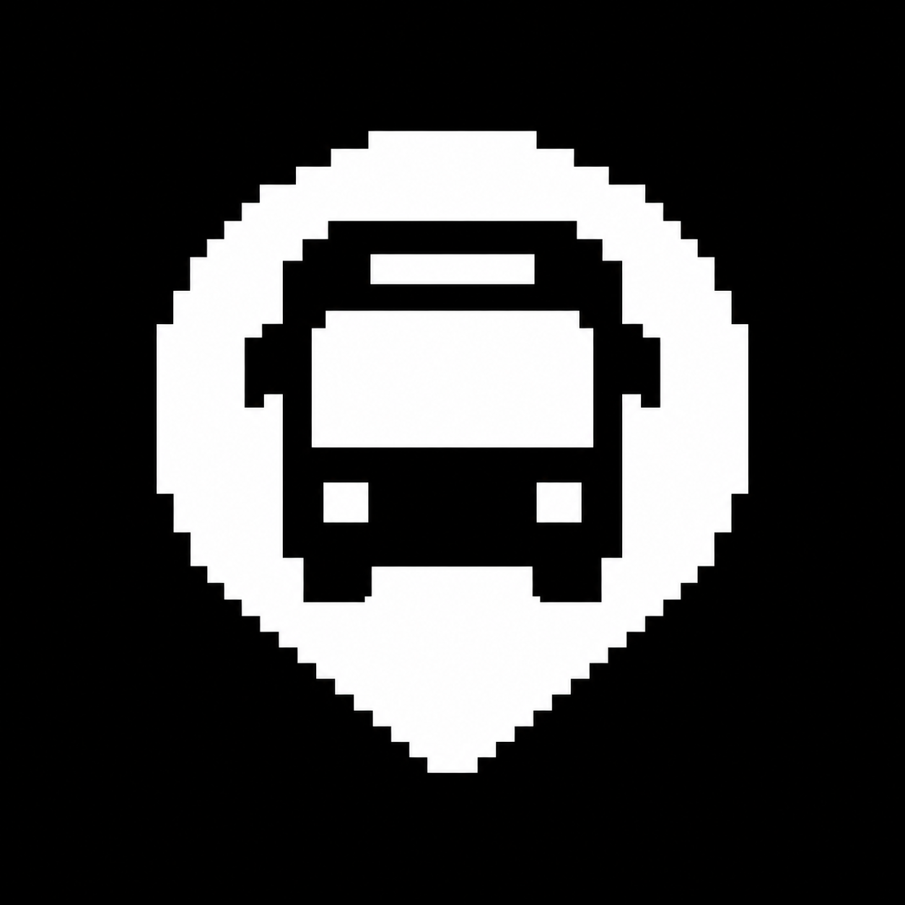
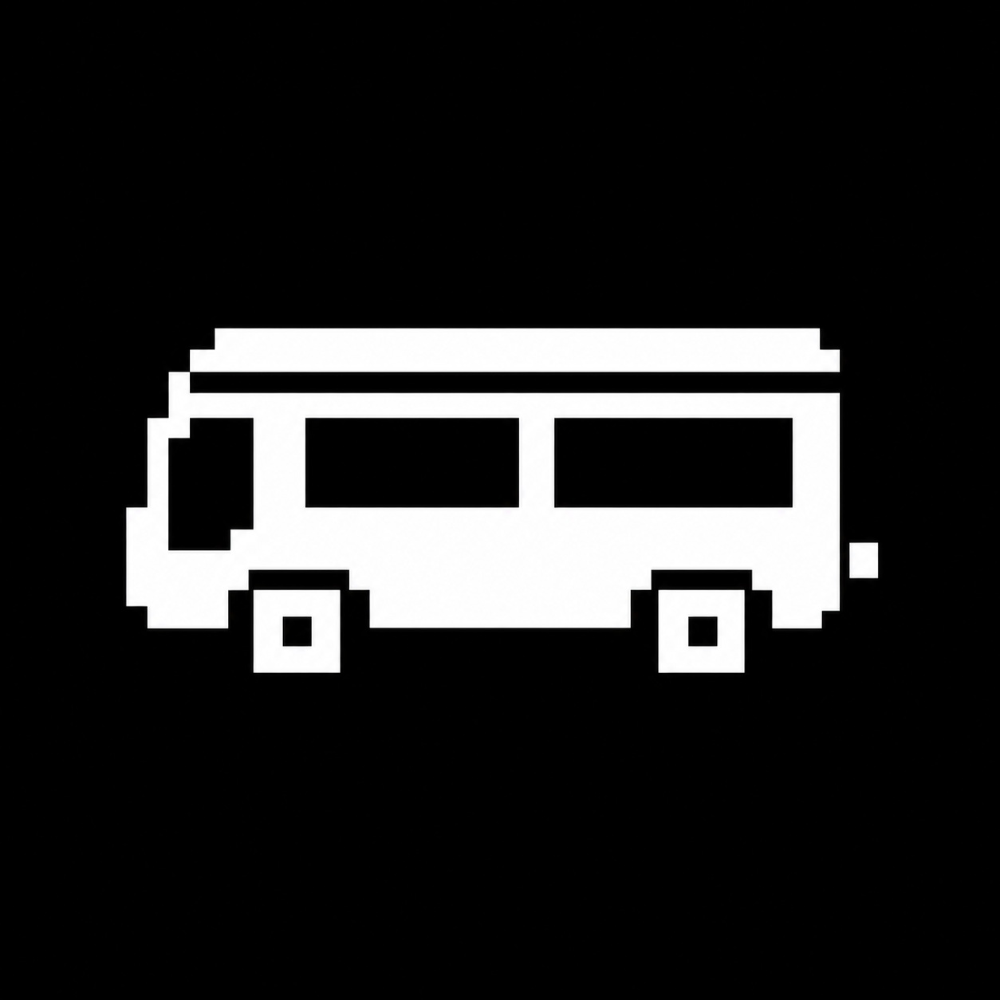
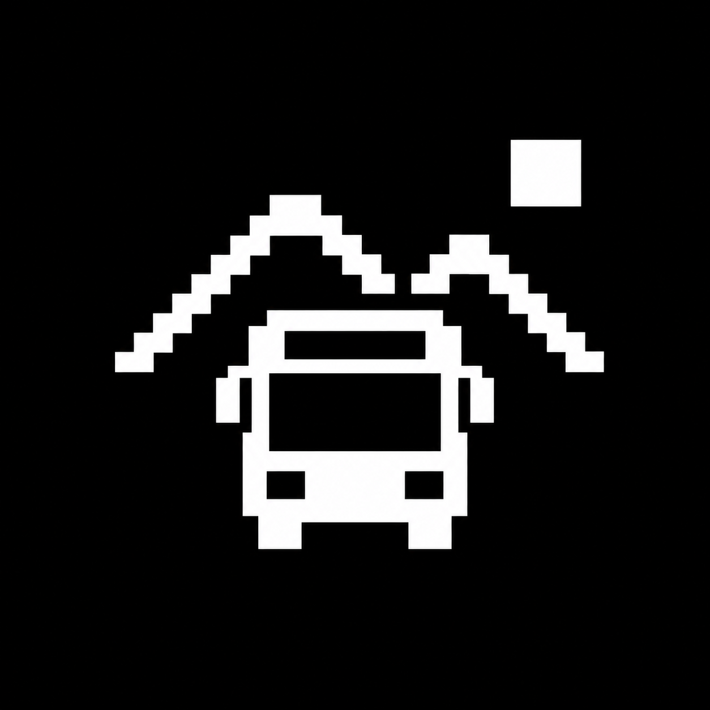
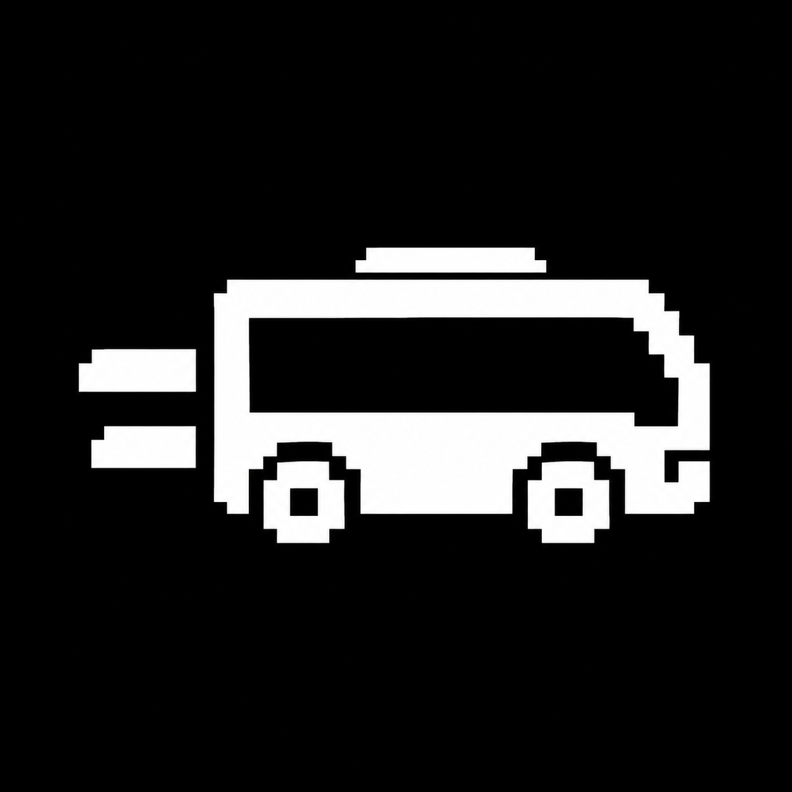

01 Neon Express
Selected · clearest bus silhouette
The owner selected 01 Neon Express. All ten original concepts remain here. The chosen mark has been finalized as a 25 × 25 transparent black glyph for the launcher; Pebble applies its own icon tint.

Selected · clearest bus silhouette

Distinctive KasugaBus monogram

A bus on its loop route

Time and Bus in one mark

Japanese bus-stop sign

Nearby boarding-point motif

Playful retro shuttle

Bus and neighbourhood hills
A bold KasugaBus ticket

A bus with motion strokes